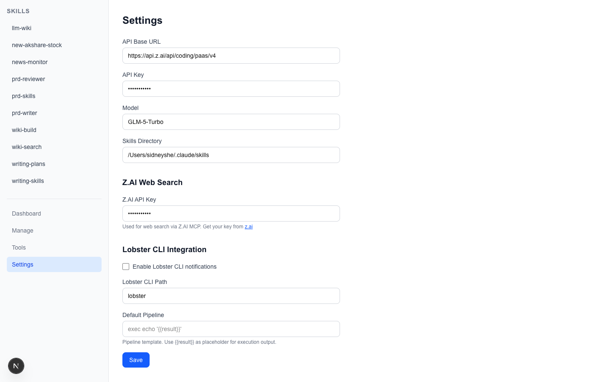
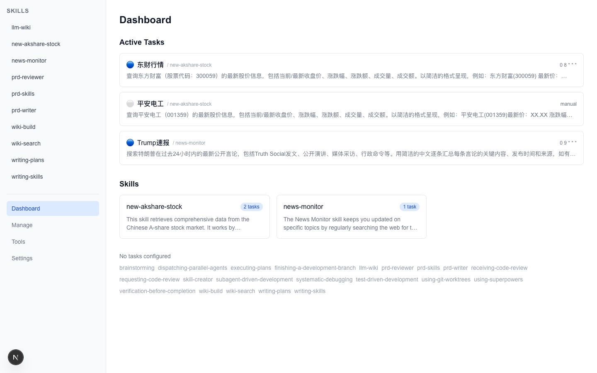
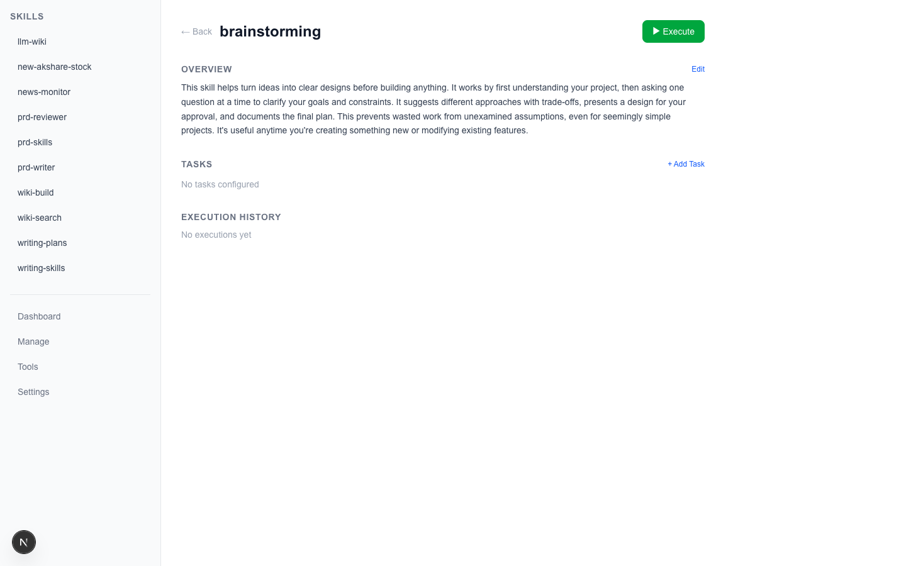

AI Skill Automation Platform — Manage and Schedule Your Claude Code Skills
Skill Manager is a Next.js full-stack application for managing Claude Code Skills in the ~/.claude/skills/ directory. It provides a web interface to visualize Skill structures, manage scheduled tasks, trigger execution manually, and drive LLM through OpenAI-compatible APIs to complete automated workflows.
Auto-parse SKILL.md, hash-tracked summary sync
Cron, Webhook, Manual, Chain triggers
Natural language → LLM auto-parses to structured config
Generic MCP client, connect to any MCP service
Full history, token usage, collapsible process view
Auto-push results to WeChat, DingTalk, Slack, etc.
cd skill-manager
npm installnpm run devVisit http://localhost:10001.
python3 -m venv .venv
source .venv/bin/activate
pip install -r scripts/requirements.txtOpen http://localhost:10001/settings or edit skill-manager.json in the project root:

| Setting | Description |
|---|---|
base_url | OpenAI-compatible API base URL (Z.AI, OpenRouter, etc.) |
api_key | LLM API Key (auto-masked on GET, shows first 4 + last 4 chars) |
model | Model name (e.g. glm-4-flash, gpt-4o) |
skills_dir | Skill directory path (default ~/.claude/skills, overridable via SKILLS_DIR env) |
| Setting | Description |
|---|---|
zai_api_key | Z.AI API Key for the MCP Web Search tool |
| Setting | Description |
|---|---|
lobster_enabled | Notification toggle (default false) |
lobster_path | Path to Lobster CLI binary |
lobster_pipeline | Pipeline template, supports {{result}} placeholder |
Notifications are triggered automatically after each successful Skill execution (async, non-blocking), used to push results to WeChat, DingTalk, Slack, etc.
... + last 4 chars)| Variable | Description | Default |
|---|---|---|
SKILLS_DIR | Skill directory path | ~/.claude/skills |
PORT | Server port | 10001 |
OPENAI_BASE_URL | LLM API URL (overridden by config) | — |
OPENAI_API_KEY | LLM API Key (overridden by config) | — |
OPENAI_MODEL | Model name (overridden by config) | gpt-4o |

active tasks across Skills, shows trigger type icons (Blue=Cron Green=Webhook White=Manual), task names, parent SkillsOn load, Dashboard checks all SKILL.md files via SHA-256 hash. If content has changed or new Skills are found, summaries are auto-regenerated. Hash-based comparison avoids unnecessary LLM calls.

Three states:
Summary is generated by LLM from SKILL.md content, 200-500 chars plain text.
Each task card contains: trigger type icon, name, schedule expression, instruction preview, ▶ Run and delete buttons.
▸ Process (N reasoning turns · M tool calls), expand to see each tool call detailProcess data is displayed temporarily after execution and disappears on page refresh. It is not persisted to history.json.
Click "+ Add Task" on a Skill detail page to open the creation wizard:
Describe the task you want in English (or Chinese):
Search Trump's latest statements every morning at 9am, summarize in ChineseClick "Analyze", LLM auto-parses to structured config.
LLM returns the parsed result, editable: task name, trigger type, trigger config, execution instructions. Click "Confirm & Save". Task IDs auto-increment (TASK-001, TASK-002, ...).
This feature requires an LLM API Key configured in Settings.
| Type | Description | Configuration |
|---|---|---|
| cron | Scheduled execution, standard cron expression | trigger_config: "0 9 * * *" |
| webhook | HTTP POST callback, external system trigger | Configure endpoint, e.g. /api/hooks/my-hook |
| manual | Click to run from Web UI | Default mode, no config needed |
| chain | Chain trigger, auto-fires next Skill after completion | Configure chainTarget |
Adding/updating a Cron task auto-registers to system crontab, no manual config needed.
0 9 * * * curl -s -X POST http://localhost:10001/api/execute/news-monitor?trigger=cron&task_id=TASK-001 # skill-manager:news-monitor:TASK-001# skill-manager:<name>:<taskId> to manage entriescurl -X POST http://localhost:10001/api/hooks/my-hook \
-H "Content-Type: application/json" \
-d '{"event": "trigger", "data": "extra context"}'System scans all Skills for matching webhook triggers, appends payload to prompt, and executes.
After current Skill completes, auto-fires the next Skill.
## Triggers
### chain-1
- type: chain
- chainTarget: next-skill-name
- status: activeBuilt-in @modelcontextprotocol/sdk, connects to any Streamable HTTP MCP server:
import { callMcpTool } from "@/lib/mcp-client";
const result = await callMcpTool(
"https://api.z.ai/api/mcp/web_search_prime/mcp",
"your-api-key",
"web_search_prime",
{ search_query: "search query" }
);Each call creates a new connection (avoids session expiry), auto-handles init handshake and session cleanup.
## Tools
- web_search| Tool | Description | Params | Dependency |
|---|---|---|---|
web_search | Web search via Z.AI MCP | query: search keyword | zai_api_key |
Tools are auto-invoked by the LLM Agent during execution as needed, no manual triggering required.
Config stored in ~/.claude/skills/skill-manager/<name>/custom.md.
## Tools
- web_search
## Tasks
### TASK-001
- name: Task Name
- trigger_type: cron
- trigger_config: 0 9 * * *
- instruction: |
Specific task instructions...
- status: activeSystem also supports the old format, can coexist in the same custom.md:
## Triggers
### TRG-001
- intent: trigger intent
- type: cron
- cron: 0 9 * * *
- status: active
## Execution Details
### EXEC-001
- intent: execution intent
- prompt: |
Additional execution instructions...~/.claude/skills/
news-monitor/
SKILL.md # Skill definition (Claude Code reads this)
skill-manager/
news-monitor/
custom.md # Custom config (tasks, triggers, tools)
summary.md # LLM auto-generated summary
history.json # Execution history + edit logs
.skill-hash # SHA-256 hash of SKILL.md (change detection)skill-manager/ subdirectory ensures data files don't interfere with Claude Code reading SKILL.md.
| Method | Path | Description |
|---|---|---|
| GET | /api/skills | List all Skill names |
| GET | /api/skills/[name] | Get Skill full details |
| PUT | /api/skills/[name] | Update Skill (add/update tasks, summary) |
| DELETE | /api/skills/[name] | Delete task or trigger |
| Method | Path | Description |
|---|---|---|
| POST | /api/execute/[name]?trigger=manual&task_id=TASK-001 | Execute a specific task |
| POST | /api/execute/[name]?trigger=manual | Execute entire Skill |
| POST | /api/hooks/[hookId] | Webhook trigger |
| Method | Path | Description |
|---|---|---|
| GET | /api/settings | Get config (API Key masked) |
| PUT | /api/settings | Update config |
| GET | /api/summary | Batch sync all Skill summaries |
| POST | /api/summary | Generate single Skill summary |
| POST | /api/interpret | Natural language to task config |
| POST | /api/cron | Manage crontab (register/remove/list) |
User/Timer/Webhook → API Route (/api/execute/[name])
→ Read Skill config (custom.md)
→ Parse tool declarations (## Tools) → resolveTools() → ToolDefinition[]
→ assemblePrompt() builds full prompt
→ pi-coding-agent Agent Loop
→ LLM decision → tool call → get result → continue reasoning (auto multi-turn)
→ Log execution (history.json)
→ Lobster notification (if enabled)
→ Check Chain trigger → recursively execute next Skill
→ Return result + process data (process steps, reasoning turns)| Parameter | Value |
|---|---|
| Provider type | openai-completions (OpenAI-compatible API) |
| Context window | 128K tokens |
| Max output | 4096 tokens |
| Token estimation | Character-based (ceil(text.length / 4)) |
| System prompt | Output final result only, no reasoning process |
Skill Manager v1.0 — 2026-04-14